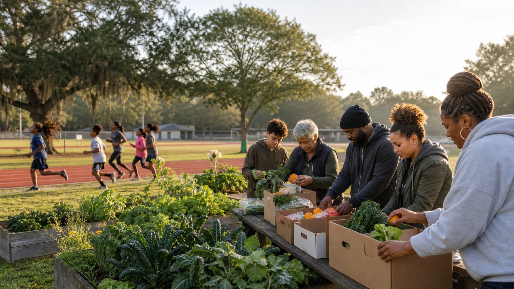

Improving access to wholesome food and wellness resources.

Restoring Ancient Paths Through Wellness, Education & Community
Ancient Path Creative Ministries is a 501(c)(3) nonprofit dedicated to improving community wellness, increasing access to nourishing food, and creating meaningful youth development opportunities rooted in stewardship, learning, and service.
Helping youth build confidence, skills, and discipline.
Strengthening communities through support.
Our Mission
Helping families reconnect with ancient paths in everyday life.
Ancient Path Creative Ministries empowers individuals and communities through programs that promote healthy living, youth development, food access, environmental stewardship, and overall community well-being.
We believe healthier communities are built when people have access to nourishing food, practical life skills, youth enrichment, and supportive relationships.
Main service areas
Our Core Service Areas
Featured initiative
Ancient Path Farms
A wellness and food access initiative focused on improving health outcomes through nourishment, education, and sustainable practices.
Focus Areas
- Food access support
- Nutrition & Herbal education
- Agriculture
- Sustainable living skills
- Community wellness resources
Outcomes
- Aging Adult Wholesome Meal Delivery
- Garden education workshops
- Healthy cooking education
- Seasonal food support initiatives
Featured programs
Youth Development Programs
Programs designed to help children grow physically, mentally, and socially.
Youth Wellness
Programs that support physical activity, confidence, and healthy habits.
- Track & field
- Movement
- Healthy habits
Nature & Agriculture
Hands-on learning through food, gardening, stewardship, and sustainable practices.
- Gardening
- Cooking
- Food systems
- Stewardship & Sustainability
Academic Enrichment
Skill-building programs that strengthen learning, life skills, and leadership.
- Spelling bees
- Literacy
- STEM
- Life Skills
- Critical thinking
- Leadership
Why we serve
Bridging gaps with community-centered solutions.
Many families face barriers to:
- Healthy food access
- Youth enrichment opportunities (homeschool support)
- Wellness education
We address gaps in food access, wellness education, and youth development by creating practical programs that nourish the body, strengthen the mind, and support long-term community resilience.
Our growing impact
Building programs around measurable community needs.
APCM is actively building programs that expand access, wellness, opportunity, and community support.
Get involved
Help strengthen the work.
Volunteers, partners, and donors help make food support, youth programming, education, and outreach possible.
Volunteer
Support programs and events.
Partner
Businesses, churches, schools, and sponsors can help expand the reach.
Give
Help fund supplies, equipment, meals, and outreach.
Transparency & Accountability
Responsible stewardship and organizational integrity.
Ancient Path Creative Ministries is committed to responsible stewardship and organizational integrity.
IRS 501(c)(3) Determination Letter
EIN Confirmation
Board of Directors
Annual Reports
IRS Form 990
Bylaws
Key Policies
Contact
Start a conversation.
Reach out about volunteering, partnerships, donations, program support, or organizational documents.
- info@ancientpathcm.org
- Service area
- Western Pennsylvania